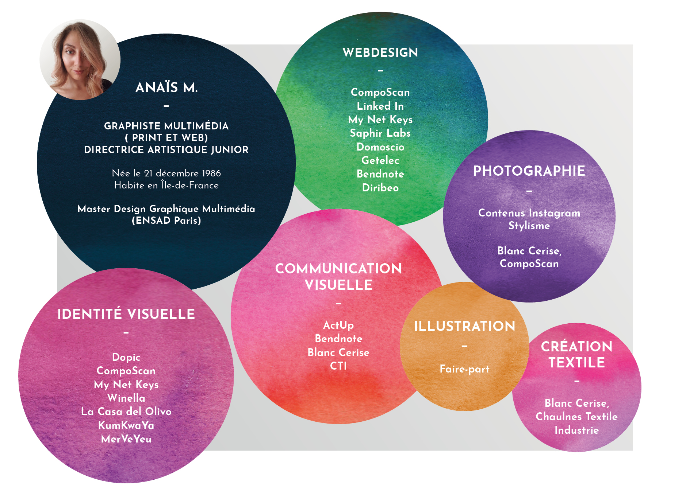

Bonjour !
Diplômée de l’Ecole Nationale Supérieure des Arts Décoratifs de Paris (ENSAD), je suis passionnée par la création graphique et la communication visuelle. J’ai choisi le métier de graphiste pour sa dynamique sans cesse renouvelée. La direction artistique ne cesse de se réinventer et c’est précisément ce qui me plaît.
De ma première expérience en freelance, je garde le souvenir d’une multitudes de petits et grands projets qui m’ont habituée à passer d’un univers à l’autre avec rapidité. Ça a été une période intéressante, riche, parfois déstabilisante, mais également importante dans le développement de mes compétences. J’ai appris à comprendre les briefs des clients, à gagner en efficacité et surtout en autonomie.
En poste pendant 4 ans chez Blanc Cerise, je me suis efforcée de participer à la progression de l’identité de cette jolie marque avec autant de rigueur et d’intérêt qu’à mes débuts. Grâce à cette expérience, j’ai beaucoup appris sur les stratégies e-commerces et les campagnes marketings dont j’ai géré les versants print et web en parallèle. Esprit d’équipe, adaptabilité et innovation étaient les maîtres mots de ce poste où il m’a été donné d’apprendre au moins autant que j’ai transmis.
Depuis, je suis revenue au freelance où je m’emploie à élargir mes horizons. D’ailleurs, l’illustration est un domaine qui me plaît particulièrement et qui oriente souvent mes projets créatifs professionnels. A une époque où le digital est roi, j’aime l’idée d’amener quelque chose de fait-main dans un paysage ultra normé.
J’espère que l’exploration de mon univers visuel vous a plu et je vous invite à consulter mon CV et à me contacter si vous souhaitez que nous travaillions ensemble.
